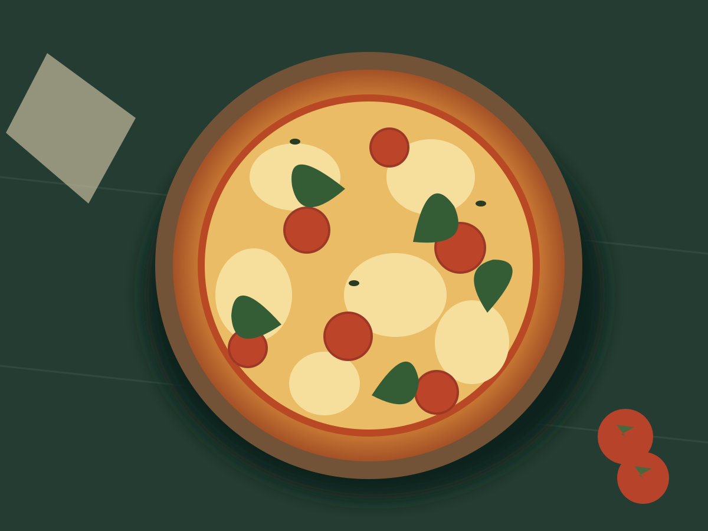

Encontre seu sabor
Explore as clássicas ou descubra as combinações da casa.
A turma escolhe o filme.
Você escolhe o sabor.
O último pedaço? A gente não se mete.

PIZZA BOAPizzas de 35 cm, 8 fatias.
Valores e ingredientes ilustrativos. Este site não realiza vendas.
Alergênicos ilustrativos: as pizzas contêm trigo e leite. Não há operação real nem garantia de ausência de contaminação cruzada.
Brasa nasceu como uma ideia: transformar uma pizza em um convite para estar junto. Sem cerimônia. Sem complicar.
Na narrativa desta marca conceitual, a massa descansa, o molho tem protagonismo e o forno termina o que o tempo começou.
Leveza como ponto de partida.
Borda dourada, centro macio.
A melhor parte vem depois.
Explore as clássicas ou descubra as combinações da casa.
Adicione pizzas ao pedido e ajuste as quantidades.
Veja o resumo e simule a finalização. Sem envio ou pagamento.
Não. Brasa é uma pizzaria fictícia. O carrinho é uma demonstração local e não envia informações, não cobra e não gera entrega.
O cardápio demonstrativo usa um tamanho único de 35 cm, com 8 fatias. Não há opção de meia pizza nesta versão.
Não há serviço de entrega. O total representa apenas a soma dos produtos ilustrativos, sem cobrança.
Não. As escolhas permanecem apenas enquanto esta página está aberta e são apagadas ao recarregar.